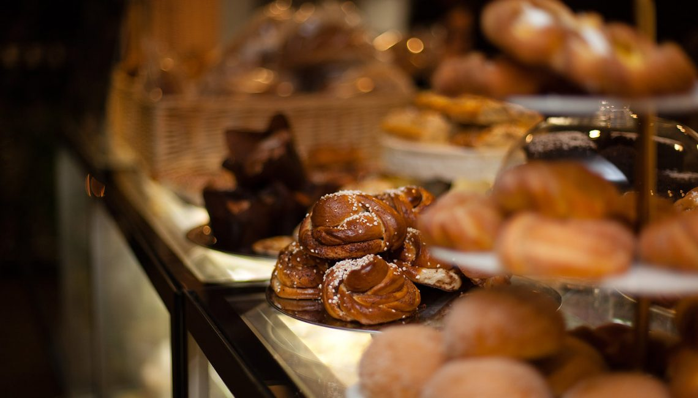

Välkommen till Kaffekvisten!
Hos oss hittar du den perfekta platsen för att njuta av en god kopp kaffe, fräscha bakverk och en avslappnad atmosfär. Vi är passionerade när det kommer till kaffe och bakning, och vi strävar efter att erbjuda våra gäster en unik smakupplevelse. Kom in och känn dig som hemma!